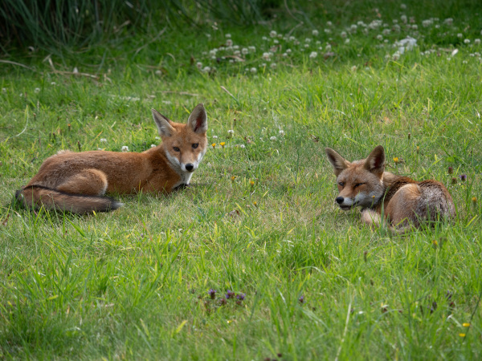
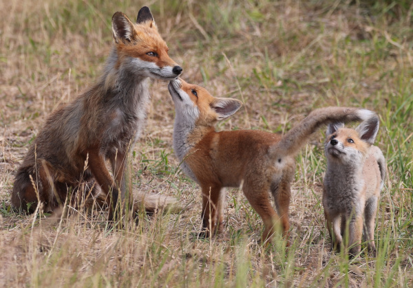
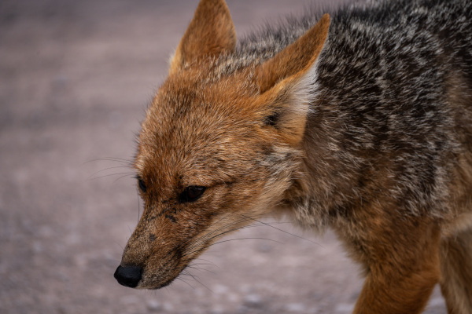

Web Raposa
Raposas Reais
Habitat
As raposas vivem em quase todos os continentes, exceto na Antártida. Elas habitam uma enorme variedade de locais, incluindo florestas, tundras, desertos e até áreas urbanas. No Brasil, a espécie mais comum é a raposa-do-campo, encontrada principalmente no Cerrado, Pantanal e áreas de florestas abertas.

Habitos Alimentares
As raposas são animais onívoros e oportunistas, o que significa que comem quase de tudo. A dieta varia de acordo com a espécie e a região, incluindo pequenos mamíferos (como roedores e coelhos), aves, ovos, insetos, carniça e uma grande variedade de frutas, bagas e sementes

Curiosidades sobre raposas
As raposas são canídeos fascinantes, pertencentes à mesma família de cães e lobos, que surpreendem pela inteligência e adaptabilidade. Apesar da fama de solitárias, são pais dedicados, possuem uma audição superpotente e até utilizam suas caudas volumosas como cobertores.
